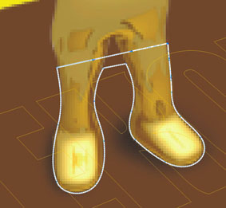
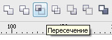

Наложение текста на картинку
Порой необходимо наложить текст на имеющееся изображение так, словно он там и был
В данном случае текст располагается поверх круга. Поэтому рисуем круг и накладываем на него надпись. Текст обязательно переводим в кривые. Подбираем цвета, соответствующие фоновому изображению. Затем лучше покрасить круг в юбой "кричащий" цвет, дабы не потерять его впоследствии (когда он будет не нужен). Текст и круг группируем.
Далее переходим в режим рамочного отображения. Чтобы не теряться в разноцветии картинки. Накладываем созданную группу на положенное ей место. А затем, поворачивая и сдвигая группу, добиваемся точного совпадения формы своего и фонового кругов (точнее овалов)
Теперь разгруппировываем и убираем ненужный более овал. Проверяем насколько хорошо читается наложенный текст. (В данном случае к тексту пришлось добавить контур)
С текстом, вписанным в прямоугольник корешка книги поступаем аналогимчным образом. С той лишь разницей, что здесь лучше применить эффект перспективы .
Порой текст перекрывают какие-либо объекты (в данном случае - человечки). Если граница между объектом и текстом достаточно чёткая, можно воспользоваться иструментом "ластик" и стереть "скрытые" части букв.Если же граница "мягкая" (размытая), то, для создания большей правдоподобности, придётся воспользоваться кореловским PhotoPaint`ом или адобовским PhotoShop`ом.
Оцениваем результат:
Прикольная у тебя папка: "НЕ ТРОГАТЬ".
Серьёзный подход :D
ну, эт создал када малые любили просто по компу полазить, позаглядывать и удалили мне парочку срочных работ((
Моим хоть что пиши — бестолку.
Пришлось им комп купить.
stasys, много раз сталкивался с подобной задачей.
1. В наложении текста "Rick96" я бы воспользовался "перспективой".
Трансформированием тяжело добиться желаемого результата.
И к тому же здесь должен присутсвовать факт перспективы.
2. Картинка неочень удачная, в плане разрешения.
Смысл наложения векторного текста теряется.
Или далее надо расстрировать текст, и задать ему размывку края.
А то, на мой взгляд, это будет бросаться в глаза.
P.S. Это если надо добиться правдоподобности.
3. Человечка можно вырезать и добавить его над текстом.
Обводим часть человечка, которая в области текста.

Применяем пересечение с основной картинкой.

Помещаем полученную часть наверх и делаем размывку по краю.
С Уважением!
sergey, я собственно не собирался писать урок Просто вот здесь:
http://powerclip.ru/modules....t105679
новичёк не знал как это делается в принципе. Вот я и объяснил человеку в двух словах.
А трансформировать текст в Фотошопе я как-то стремаюсь. Вот и воспользовался любимым инструментом)))
По поводу перспективы овала. Она (перспектива) в данном случае не настолько явная, чтобы использовать серьёзный эффект))
Можно человечка вырезать/вставить, можно текст вытереть ластиком. Это вариации на тему. А какой вариант использовать - нужно смотреть в каждом случае отдельно)))
p.s. Благодарю за дополнение
Я такое как-то привык делать в фотопайнте. Экспортировал с альфа-каналом, потом накладывал пытаясь зрительно ориентироваться по каким-то ключевым точкам, чтобы плоскости совпадали. Наружку на автобус так накладывал неоднократно. Главное — с точками определиться.
Картинка от балды, просто так набросал для примера, ничё не подумайте... )))
romio, благодрю за наводку на фотопейнт))
хм... а я слово "редька" всегда с "Ь" пишу
В фотошопе тоже такая фигня есть, когда на работе его купят, освежу знания.
Кстати, в уроке для простоты ничего не говорилось про доводку, так я немного добавлю от себя (покрасуюсь)))).
После того, как объект окончательно вставлен может быть заметна явная разница между фоном и нашим объектом. Для более точного «вклеивания» желательно сблизить фон и объект по яркости/контрастности, резкости и т. п.
В этому случае использование именно растровых редакторов для монтажа — самое лучшее средство: на своих глаза «приблизить» объект к фону можно кривыми, линиями, цветовой коррекцией, эффектами и др. растровыми средствами.
Я так постоянно делаю, вклеивая отдельные несуществующие модули в реальные сфотографированные под углом рекламные конструкции. Бегунками или линиями понижаю верхний световой порог, чтобы белое было не настолько нереально белым
Когда делаю не работу — могу в кои-то веки расслабиться и не парясь писать то, куда руки на клаве попадут. ))))
мне и самому постоянно приходится это делать. хотя в моём случае сверхреалистичности не требуется. наружкой занимаюсь. а наши клиенты пока не требуют демороликов с объездом "скрепок" "на месте")))
а фотки, на которые делаю наложение, обычно заранее осветляю. (хотя случаи бывают разные)
Добрый всем день! Прекрасно рассказали, как наложить текст. Спасибо. А в КАКОЙ ПРОГРАММЕ?
Страницы